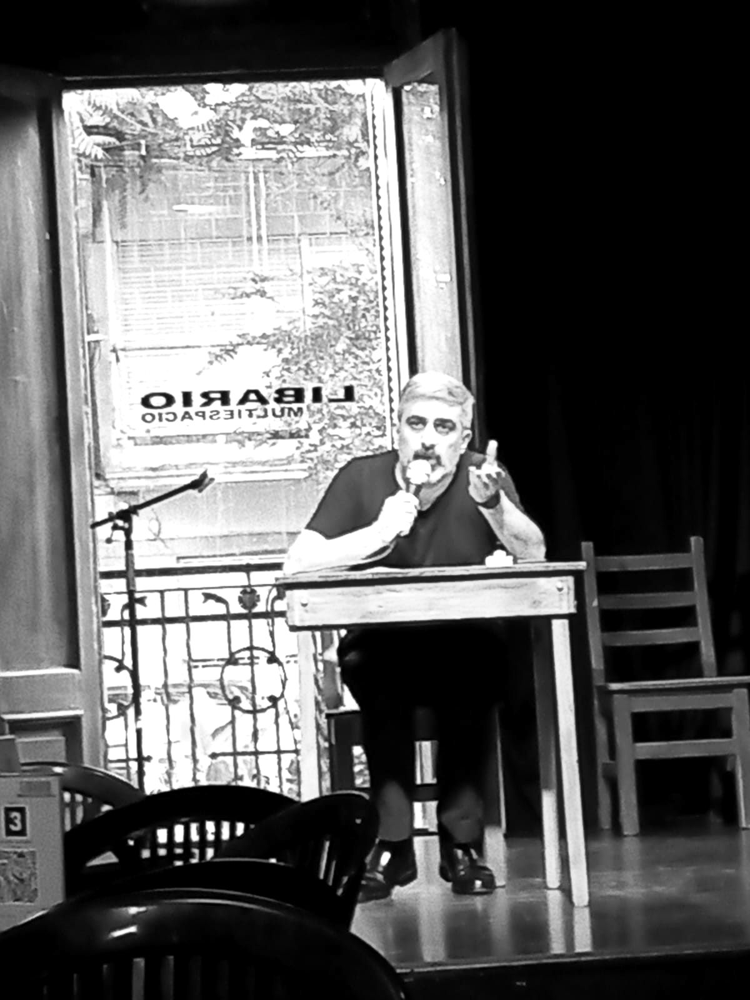
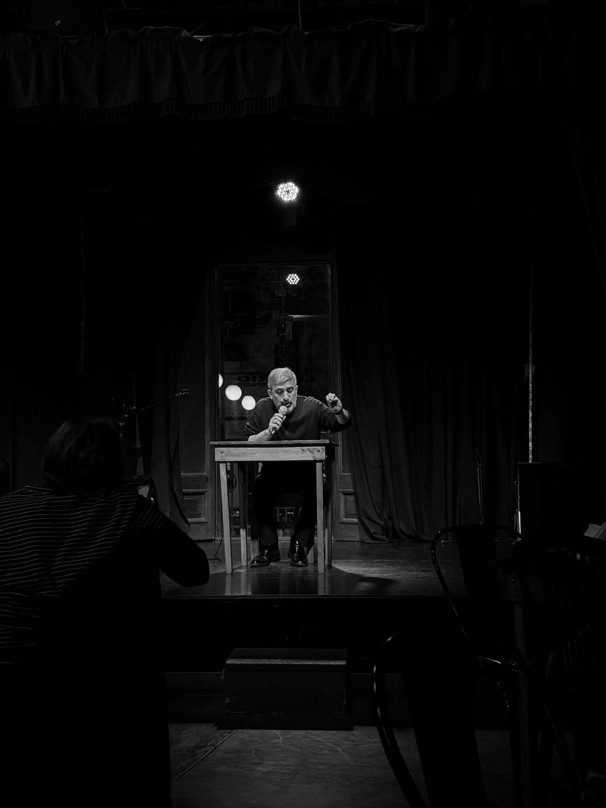
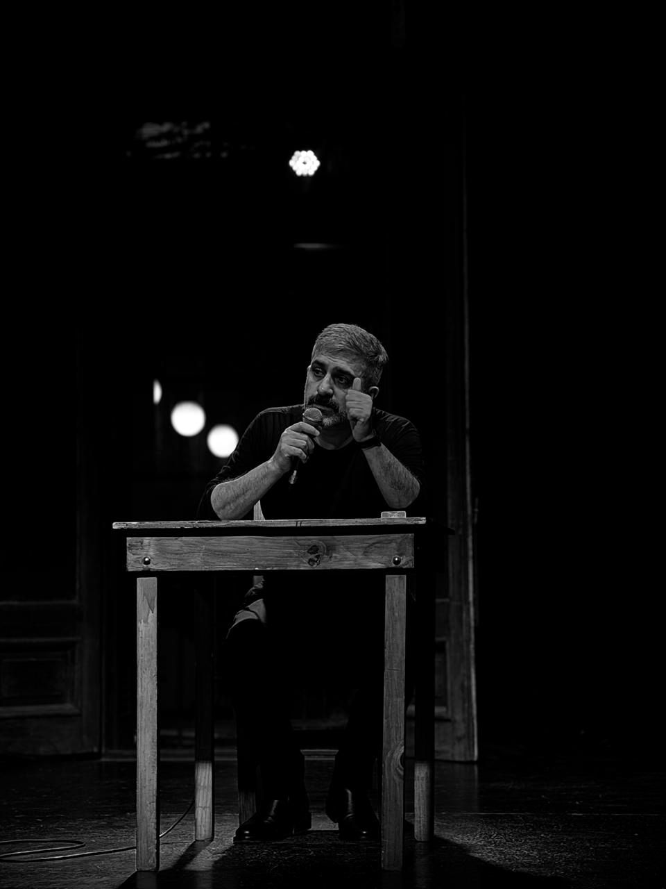
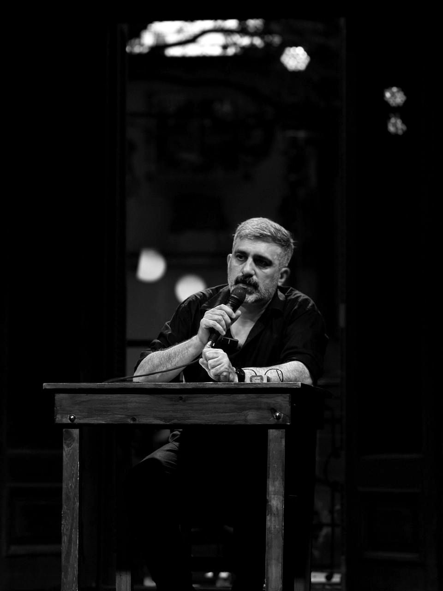
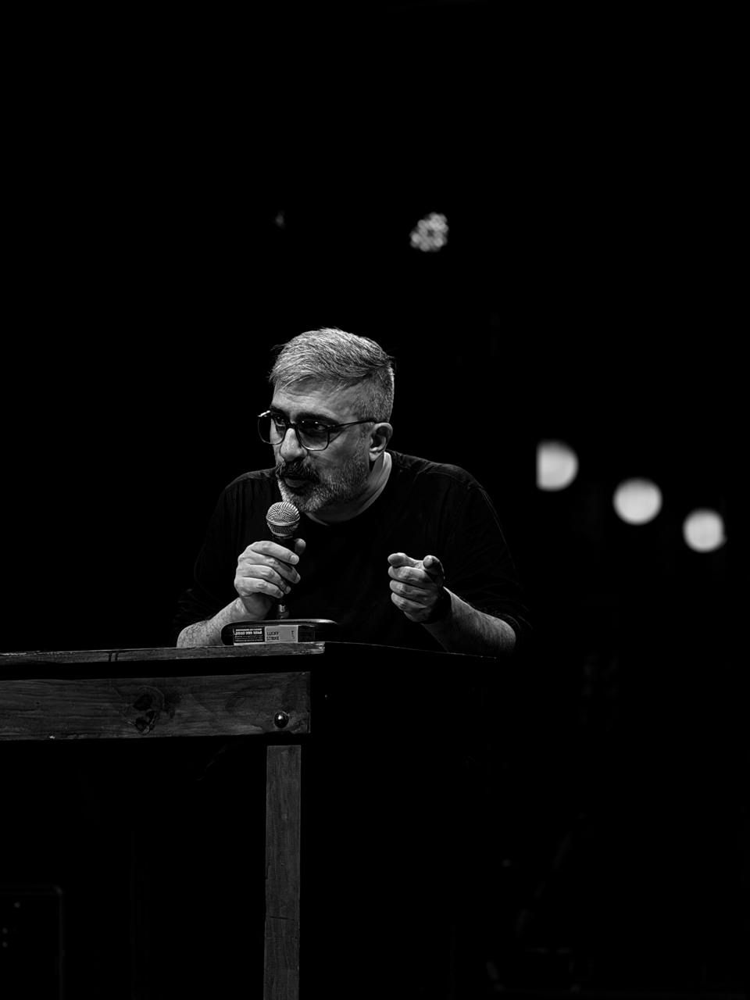
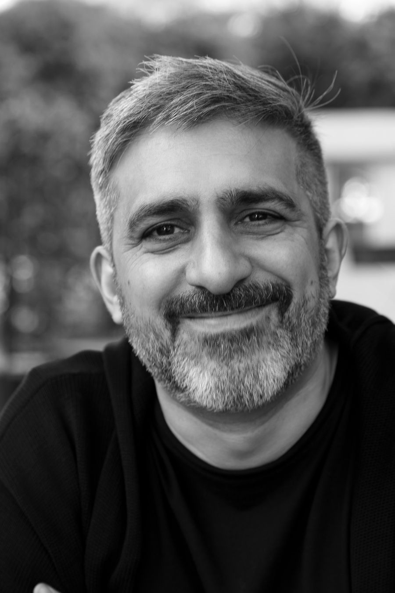

Pase sábado 3/10
$14.000
- Charla Introducción al Anti-Edipo · ILAE3
- Clase performática
- Fiesta de Primavera
Charla de apertura con Fernando Gallego. El problema del libro de G. Deleuze y F. Guattari no es el deseo, ni la producción, ni el capitalismo, ni la esquizofrenia por separado: es cómo se plantea la relación entre lo humano y lo social.

El sábado cierra el Encuentro de Primavera del Festival de Filosofía de Buenos Aires. Con el pase del sábado entrás a todo lo que pasa esa noche en Libario.
Fernando Gallego plantea el problema del libro y anuncia el recorrido del ciclo que empieza esa misma noche.
Parte de la programación del festival para el cierre del encuentro.
La noche termina con la fiesta que cierra el Encuentro de Primavera.
El botón te lleva directo al pago en Passline, con el pase del sábado ya elegido. Passline suma un 15 % de cargo por servicio: $16.100 en total por pase (al 21/9/2026).
Sólo hay deseo y lo social, y nada más.
Entre lo humano y lo social no hay reducción: la sociedad no es causa del hombre, y el hombre no es causa de lo social. Tampoco hay armonía ni contradicción dialéctica. Esa relación no se piensa como participación ni como pertenencia, sino como pura heterogeneidad. Lo real, ahí, no es cosa y tampoco estructura: es proceso.
El subtítulo del libro ya lo dice. Capitalismo y esquizofrenia: el capitalismo no es, en el fondo, más que una máquina social; la esquizofrenia, más que el ser genérico del humano. El problema reside en la conjunción.
La charla del sábado plantea ese problema, sitúa la disyunción frente a la participación anglosajona y frente a la pertenencia alemana, y presenta el recorrido del ciclo que se abre esa noche.
No hace falta haber venido antes. Sí hace falta tener ganas de pensar con el libro y a partir del libro. La charla es una exposición de cincuenta o sesenta minutos hecha a partir de una lectura; si queda tiempo, seguimos conversando sobre el tema del día.

Entre octubre de 2024 y marzo de 2025 trabajamos el capítulo primero de El Anti-Edipo concepto por concepto, y nos detuvimos ante una dificultad: el concepto de esquizofrenia no se dejaba determinar. Para resolverla fuimos a Lo normal y lo patológico de G. Canguilhem; después, a Enfermedad mental y psicología de M. Foucault; y terminamos en La genealogía de la moral de F. Nietzsche, donde el problema de la concepción de lo humano se plantea de manera sistemática. Un año y medio de desvío. Volvemos ahora con eso hecho.
El trabajo se concentra en el capítulo primero, que es donde se construyen los conceptos centrales del libro, el que suele saltearse para pasar directo a la clínica y a la militancia. Vamos concepto por concepto, a razón de dos encuentros por concepto:
El objetivo final: construir las condiciones para diferenciar el problema del microfascismo del problema del neoliberalismo. Están conectados y no son el mismo problema.
Todos los sábados a las 19:00, en Libario, hasta mayo de 2027. La charla del 3/10 entra con las entradas del festival; del sábado siguiente en adelante, la actividad es gratuita. Libario nos hospeda: si consumís algo, contribuís a que siga abierto y pueda seguir alojando actividades culturales.
Nueve tramos que no son nueve temas, sino un solo problema que no dejó de abrirse.
| Tramo | Fechas | Encuentros |
|---|---|---|
| Introducción a la lectura de El Anti-Edipo, primera edición | nov. 2022 – abr. 2023 | 10 |
| El Foucault de Deleuze. El saber | abr. – nov. 2023 | 9 |
| El Foucault de Deleuze. El poder | nov. 2023 – mar. 2024 | 13 |
| El Foucault de Deleuze. La subjetivación | mar. – may. 2024 | 6 |
| Foucault y el neoliberalismo. Una lectura de Nacimiento de la biopolítica | jun. – oct. 2024 | 13 |
| Introducción a la lectura de El Anti-Edipo, segunda edición | oct. 2024 – mar. 2025 | 18 |
| La enfermedad como problema del viviente. Lo normal y lo patológico | jul. – sep. 2025 | 10 |
| El concepto de enfermedad mental. Enfermedad mental y psicología | oct. – nov. 2025 | 6 |
| La producción moral del humano. La genealogía de la moral | nov. 2025 – abr. 2026 | 19 |
| ILAE3 · Introducción a la lectura de El Anti-Edipo, tercera edición | desde el 3/10/2026 | 30 |




Profesor de Filosofía (Facultad de Filosofía y Letras, UBA) y Doctor en Ciencias Sociales (Facultad de Ciencias Sociales, UBA), con estancia posdoctoral en Ciencias Humanas y Sociales (FFyL, UBA). Sus áreas de especialización son la epistemología y la filosofía francesa contemporánea; su tesis doctoral versó sobre el concepto de ciencia en la filosofía de G. Deleuze.
Con cualquier botón de compra de esta página: te lleva directo al pago en Passline con el Pase sábado 3/10 ($14.000) ya elegido. Comprar ahora.
A las 19:00, puntual. La charla es lo primero de la noche; después siguen la clase performática y la Fiesta de Primavera.
No para la charla de apertura: justamente plantea el problema del libro y presenta el recorrido. Para seguir el ciclo sí conviene ir leyendo el capítulo primero: la experiencia de trabajo que proponemos se apropia mejor con el texto a mano.
No. Sí hace falta tener ganas de pensar con el libro y a partir del libro.
El ciclo sigue todos los sábados a las 19:00 en Libario, hasta mayo de 2027, y es gratuito. Sólo la charla de apertura entra con las entradas del festival.
En Julián Álvarez 1315, Palermo, Ciudad de Buenos Aires. Es un centro cultural independiente con más de veinte años en el barrio.